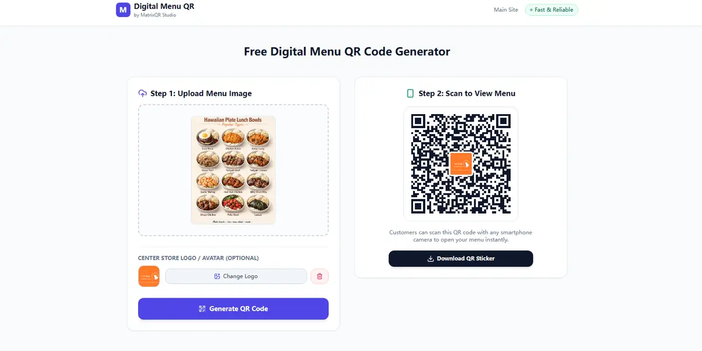

How to Add a Custom Logo to Your QR Code Menu
A custom logo QR code menu is a branded digital menu matrix embedded with a central brand icon that allows patrons to view food menus via smartphone cameras. The MatrixQR Digital Menu Generator provides a free custom-logo QR workflow with browser-side rendering for the QR payload. Page hosting, analytics, and the linked menu destination may have separate data practices.
Generic, unbranded black-and-white QR codes are easily overlooked by restaurant patrons and can spark cybersecurity concerns like QR phishing (quishing). Adding a recognizable restaurant logo can support brand consistency and make a tabletop display easier to identify, but it does not verify the destination or prove that a QR code is safe. Avoid assuming a fixed increase in scan rates without evidence from your own audience.

Why Branding Your Digital Menu QR Code Matters
In modern hospitality, every physical touchpoint reflects your restaurant brand identity. Adding visual branding may help customers recognize a restaurant display, but benefits depend on context and should not be presented as a measured UX outcome without supporting evidence:
- Brand recognition: A logo can help customers recognize the business associated with a display, but scan-rate effects vary and should be measured rather than assumed.
- Context, not authentication: A familiar logo may help customers recognize a display, but it cannot verify the QR destination or rule out a replaced or tampered-with code.
- Cohesive Aesthetic: Seamlessly aligns with table talkers, menu cards, acrylic stands, and print materials.
How Client-Side Canvas Processing Protects Restaurant Privacy
Some QR services process uploaded images on their servers, while others render in the browser. For this workflow, QR-payload and logo rendering take place in the browser; the site's hosting, CDN, analytics, and the destination page may process separate request metadata.
- Browser-side image rendering: Logo overlay and image centering take place in the browser via the HTML5 Canvas Web API. This describes the QR-generation workflow, not every request made by the website or the destination.
- Error correction and testing: QR error correction can help recover data when parts of a code are obscured, but it does not guarantee that every logo design will scan. Keep logos modest in size, preserve contrast and quiet zones, and test the exported file on multiple devices.
- Export format: Check the current tool and inspect the downloaded file before assuming an SVG contains vector QR artwork or meets a particular print-resolution requirement.
Step-by-Step Guide: Creating a Menu QR Code with a Logo
Follow these five steps to generate a branded digital menu QR code in seconds:
-
Access the Digital Menu Tool:
Navigate to MatrixQR Free Digital Menu Generator. -
Upload Menu Asset or Hosted URL:
Select your menu image file or input your hosted menu Web URL. -
Upload Brand Logo:
Under the customization panel, upload your restaurant logo (PNG, JPG, or SVG). -
Preview & Adjust Alignment:
Inspect the real-time canvas preview as the central logo auto-aligns with optimal padding. -
Export the available file format:
Use the available download option, then inspect the exported file and test it at the intended print size before producing tabletop signage.
Before printing at scale, test the exported QR code with common iOS and Android camera apps under realistic lighting and at the intended print size. Do not treat successful tests on a limited set of devices as a guarantee of universal decoding.
Comprehensive Comparison: MatrixQR vs SaaS Alternatives (2026)
| Platform | Logo Upload Privacy | Pricing Model | Vector SVG Export | Ideal For |
|---|---|---|---|---|
| MatrixQR Menu | Browser-side QR and logo rendering; page-level requests may be processed separately | Free QR generation (current offering) | ✅ Included Free | Privacy-focused restaurants & cafes |
| QR Code Monkey | Verify current upload and processing behavior in the provider's documentation or by inspecting network activity | Check current pricing and plan limits directly | Verify current export options | Marketing agencies |
| Beaconstac | Review current privacy documentation and data-processing terms | Check current pricing and plan limits directly | Verify current export options | Enterprise restaurant chains |
| Unitag | ⚠️ Stored on Remote Server | Freemium Tier | ⚠️ Paid Plans Only | General marketing campaigns |
Related Digital Menu Resources
Explore our technical tutorials to optimize your contactless dining workflow:
- If you only have a menu photo, learn our Image to Menu QR Code Conversion Guide.
- Deciding between standard link codes and hosted images? Read Static vs Dynamic QR Codes for Menus.
- Learn about our browser-based security pipeline in Browser-Side Canvas Image Sanitization Technical Deep Dive.
Frequently Asked Questions (FAQ)
Will adding a logo make my QR code menu harder to scan?
A logo can reduce the readable QR area. Error correction may help, but results depend on logo size, contrast, print quality, and the scanner. Test the final design on multiple devices before printing.
Does MatrixQR charge extra for custom logos?
The custom-logo QR generation feature is currently available without a paid subscription or account registration. Check the tool page for current terms and any future changes.
Does MatrixQR store my uploaded logo or menu data on a server?
QR-payload and logo processing for this workflow take place in the browser. The blog page, hosting, CDN, analytics, and destination website may separately process visit metadata; consult their privacy disclosures.
Conclusion
Adding a logo can support tabletop branding, but it does not prove a QR destination is trustworthy or guarantee higher scan rates. MatrixQR offers browser-side QR rendering; review the relevant privacy disclosures for page hosting, analytics, and the destination. Check current tool terms for pricing and availability.
Ready to design your menu? Access the free MatrixQR Digital Menu Generator and build your print-ready custom QR code today.